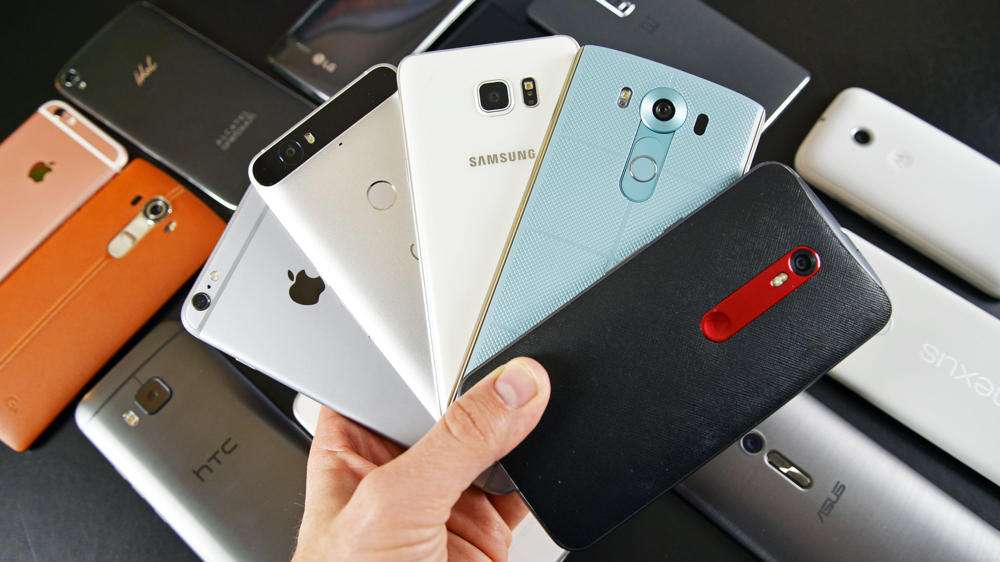

A smartphone is a mobile personal computer with a mobile operating system with features useful for mobile or handheld use. Smartphones, which are typically pocket-sized (as opposed to tablets, which are much larger in measurement), have the ability to place and receive voice/video cal ls and create and receive text messages, have personal digital assistants (such as Siri, Google Assistant, Alexa, Cortana, or Bixby), an event calendar, a media player, video games, GPS navigation, digital camera and digital video camera.
